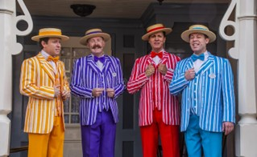

Barbershop Quartets

When most people think of Barbershop Quartets, they think of four guys with handlebar mustaches and colorful suits. This isn't incorrect, but barbershop music has evolved a lot since then ...
Youtube video section

Parts of Barbershop
Barbershop music is unique in that the highest note in every chord is not the melody. Each member of a quartet sings a different part, called (from highest to lowest) Tenor, Lead, Baritone, and Bass. The Lead is the person singing the melody of any song, and is the part you hear the most. The tenor sings the high harmony above the Lead, the Bass sings the lowest notes, and the Baritone ties all the chords together. Every part is important to the classic barbershop sound!